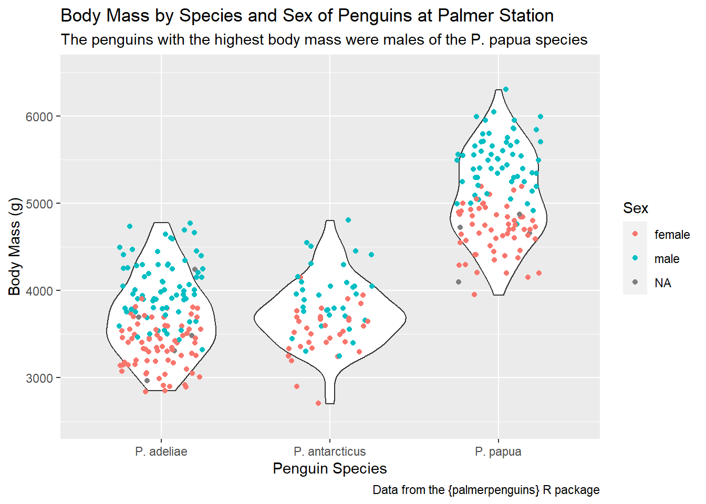
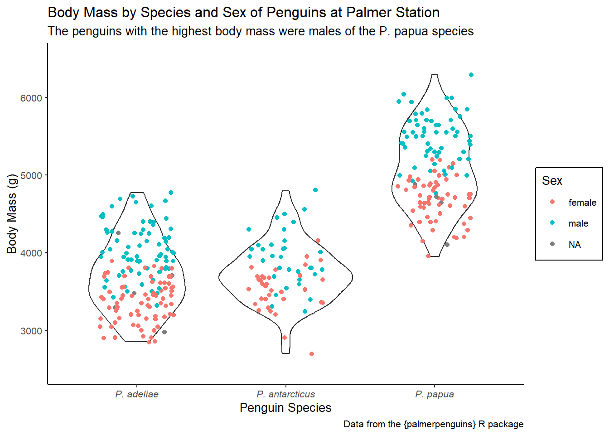

Use the penguins dataset from the {palmerpenguins} package to create a plot that maps species to the x-axis and body_mass_g to the y-axis. Add a violin geom and a jitter geom (with 0.25 width). For the jitter geom only, map sex to color.
Configure the y axis to range from 2500 to 6500.
Configure the x-axis to use the scientific names of each species (see table below)
Bonus: Suppress all messages and warnings from this chunk.
Modify your final plot from Question 1 in the following ways:
Give the x-axis, y-axis, and the color scale better labels (with Title Case)
Give the plot a descriptive title about what the graphic is about (generally) and a subtitle that describes which sex-species combination had the highest body mass.
Add a caption stating the source of this data (e.g., the package name)
Click here for the answer key
ggplot(penguins, aes(x = species, y = body_mass_g)) +geom_violin() +geom_jitter(width =0.25, aes(color = sex)) +scale_y_continuous(limits =c(2500, 6500)) +scale_x_discrete(labels =c("Adelie"="P. adeliae","Chinstrap"="P. antarcticus","Gentoo"="P. papua" ) ) +labs(x ="Penguin Species",y ="Body Mass (g)",color ="Sex",title ="Body Mass by Species and Sex of Penguins at Palmer Station",subtitle ="The penguins with the highest body mass were males of the P. papua species",caption ="Data from the {palmerpenguins} R package" )

Question 3 (Themes)
Modify your final plot from Question 2 in the following ways:
Apply the “classic” complete theme using theme_classic() and change the base font size to 10.
Adjust the legend.background element to be rectangle with color = "black".
Adjust the axis.text.x element to be text with face = "italic".
Click here for the answer key
ggplot(penguins, aes(x = species, y = body_mass_g)) +geom_violin() +geom_jitter(width =0.25, aes(color = sex)) +scale_y_continuous(limits =c(2500, 6500)) +scale_x_discrete(labels =c("Adelie"="P. adeliae","Chinstrap"="P. antarcticus","Gentoo"="P. papua" ) ) +labs(x ="Penguin Species",y ="Body Mass (g)",color ="Sex",title ="Body Mass by Species and Sex of Penguins at Palmer Station",subtitle ="The penguins with the highest body mass were males of the P. papua species",caption ="Data from the {palmerpenguins} R package" ) +theme_classic(base_size =10) +theme(axis.text.x =element_text(face ="italic"),legend.background =element_rect(color ="black") )

Note that there is no need to turn in Activities. These are just for practice!